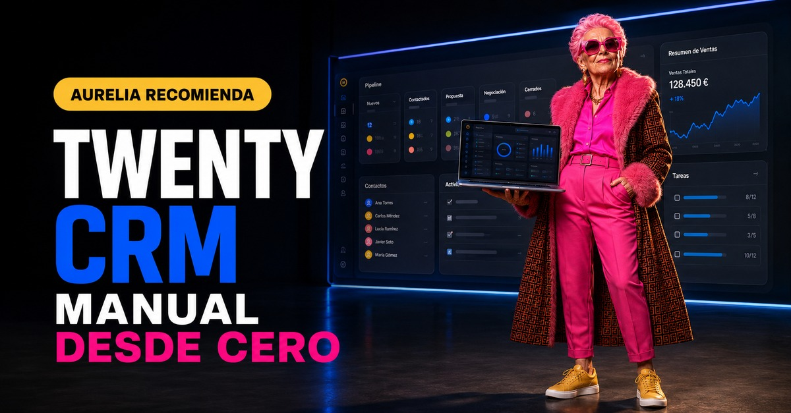

¿A quién conoces?
Nombre, cargo, teléfono, correo, empresa e historial de interacciones.
Cómo convertir contactos dispersos, correos y oportunidades en un sistema comercial claro, abierto y bajo tu control.
EMPEZAR EL MANUAL ↓
Twenty es un CRM de código abierto presentado como alternativa moderna a Salesforce. Sirve para centralizar contactos, empresas, operaciones comerciales, tareas, notas, correos, reuniones, paneles y automatizaciones.
Nombre, cargo, teléfono, correo, empresa e historial de interacciones.
Oportunidades, importe, fase, fecha prevista de cierre y responsable.
Tareas, notas, reuniones y automatizaciones para que nada se quede parado.
La empresa mantiene el servidor. Creas la cuenta, el espacio de trabajo y empiezas.
Instalas Twenty en tu propio ordenador o servidor con Docker Compose.
Twenty organiza la información en objetos. Los cinco objetos estándar que necesitas conocer son:
Contactos individuales. El correo es único: dos personas no pueden compartir la misma dirección.
Organizaciones y clientes. Se relacionan con personas y oportunidades; el dominio identifica a la empresa.
Ventas o proyectos potenciales con etapa, valor, empresa asociada y fecha de cierre.
Acciones pendientes, responsable, vencimiento y estado, ligadas a cualquier registro.
Actas, contexto, decisiones y detalles que deben quedar asociados al cliente o proyecto.
Puedes crear “Proyectos”, “Inmuebles”, “Licitaciones” o cualquier entidad con vida propia.
| Si necesitas… | Usa… | Ejemplo |
|---|---|---|
| Describir algo que ya existe | Un campo | “Tipo de cliente” dentro de Persona |
| Clasificar registros | Un campo de selección | Prospecto / Cliente / Colaborador |
| Gestionar algo con fases y fechas propias | Un objeto | Proyecto de rehabilitación |
| Relacionarlo con varias empresas o personas | Un objeto con relaciones | Licitación o inmueble |
Entra en Companies → New record. Añade nombre, dominio web, sector, ubicación y responsable.
En People, incorpora nombre, correo, teléfono, cargo y relaciónala con la empresa.
En Opportunities, indica nombre, importe estimado, fase, fecha de cierre y empresa.
Añade una tarea concreta: “Llamar el martes”, con responsable y fecha. Una oportunidad sin siguiente acción se enfría.
| Objeto | Ejemplo | Información imprescindible |
|---|---|---|
| Empresa | Cliente Ejemplo SL | Dominio, sector, ciudad |
| Persona | Ana García | Correo, cargo, empresa |
| Oportunidad | Rehabilitación energética | 25.000 €, Propuesta, 30/09 |
| Tarea | Revisar presupuesto con Ana | Responsable + fecha |
No vuelques todo de golpe. Limpia primero duplicados, correos incorrectos y nombres inconsistentes.
Correos y reuniones con contactos externos se vinculan a Personas, Empresas y Oportunidades.
Los correos entre compañeros del mismo dominio y las listas de distribución se excluyen.
En Opportunities cambia la vista a Kanban. Cada columna representa una fase y cada tarjeta, una operación.
Todo workflow empieza con un disparador: registro creado, actualizado, eliminado, ejecución manual, horario programado o webhook externo.
Cada mañana busca operaciones sin actualizar durante 10 días y avisa al responsable.
Cuando una oportunidad pasa a Ganada, cambia la empresa a Cliente y crea tareas de arranque.
Cuando se crea una persona, asigna responsable, etiqueta el origen y envía un correo de bienvenida.
Necesitas Docker y Docker Compose actualizados, al menos 2 GB de RAM y conocimientos básicos de servidor. Para producción utiliza dominio, proxy inverso y HTTPS.
bash <(curl -sL https://raw.githubusercontent.com/twentyhq/twenty/main/packages/twenty-docker/scripts/install.sh)Cuando termine, abre http://localhost:3000 si lo has instalado en tu ordenador.
.env.example y renómbralo como .env.openssl rand -base64 32 y guárdala como ENCRYPTION_KEY.docker-compose.yml oficial.docker compose up -d.SERVER_URL y HTTPS.docker exec twenty-postgres pg_dump -U postgres twenty > backup_$(date +%Y%m%d).sql.env y la clave de cifrado en un gestor seguro.Tres copias, en dos soportes distintos y una fuera del servidor. Cifra los ficheros y conserva diarios, semanales y mensuales.
Define base jurídica, minimización, plazos de conservación, usuarios autorizados y procedimiento de ejercicio de derechos. Autoalojar no resuelve por sí solo el cumplimiento.
Accede a Cloud o a tu instalación y configura nombre, moneda, idioma y zona horaria.
Define tipo de cliente, origen, responsable, sector y las etapas del pipeline.
Añade una empresa, una persona, una oportunidad y una tarea.
Selecciona visibilidad, carpetas y política de creación automática de contactos.
Crea la vista Kanban y asegúrate de que cada oportunidad tiene responsable y siguiente acción.
Un CRM lleno de datos viejos y duplicados se abandona enseguida.
Empieza con lo imprescindible. Añade un campo cuando exista una decisión que dependa de él.
Primero valida el proceso manual; luego automatiza sus pasos repetitivos.
Cada oportunidad y tarea debe tener una persona dueña del siguiente paso.
Un volumen Docker no sustituye una copia externa probada.
No publiques el archivo .env, la ENCRYPTION_KEY, contraseñas ni claves API.
Twenty evoluciona rápidamente. Antes de instalar o actualizar, revisa siempre la documentación y las notas de versión oficiales.